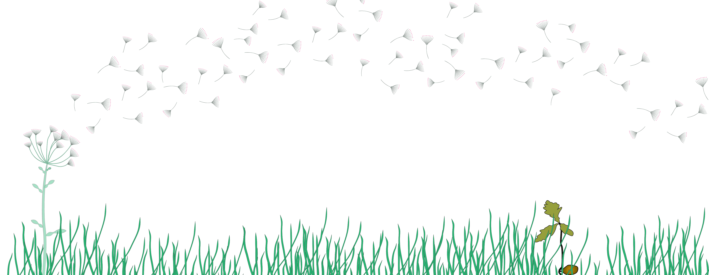
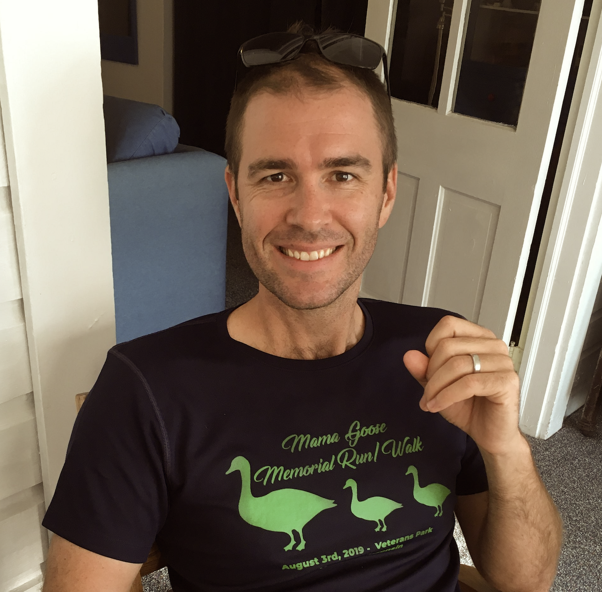
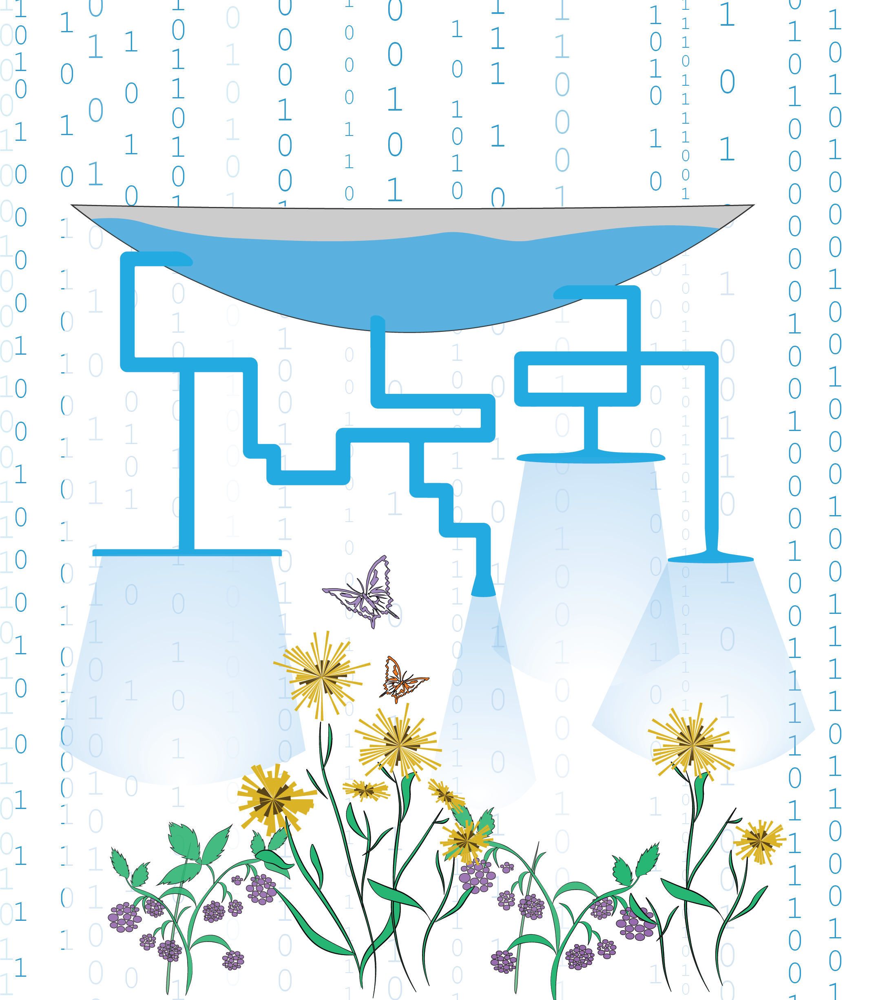
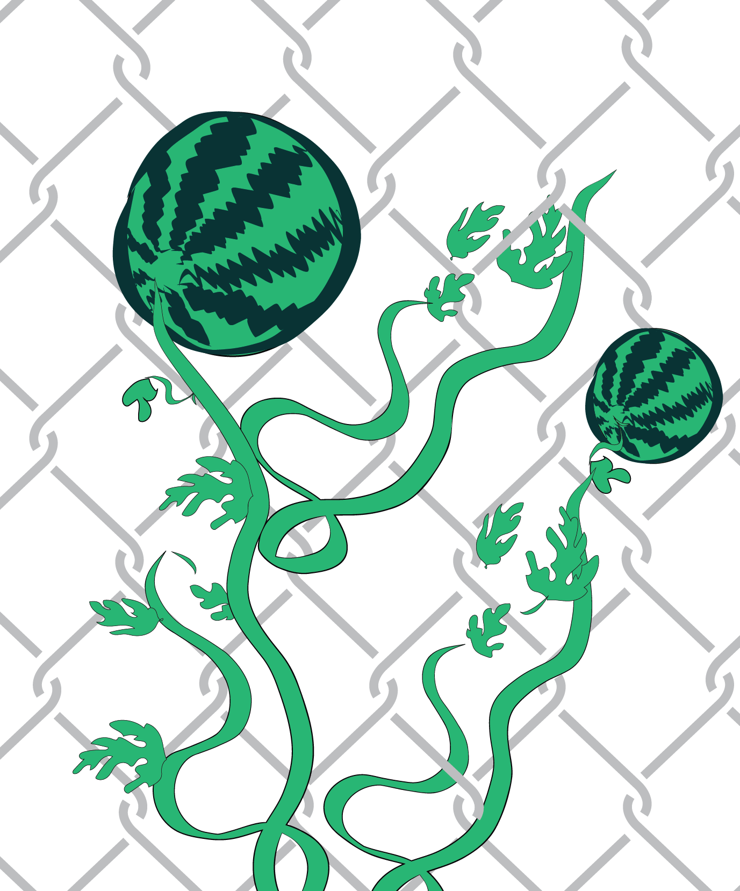
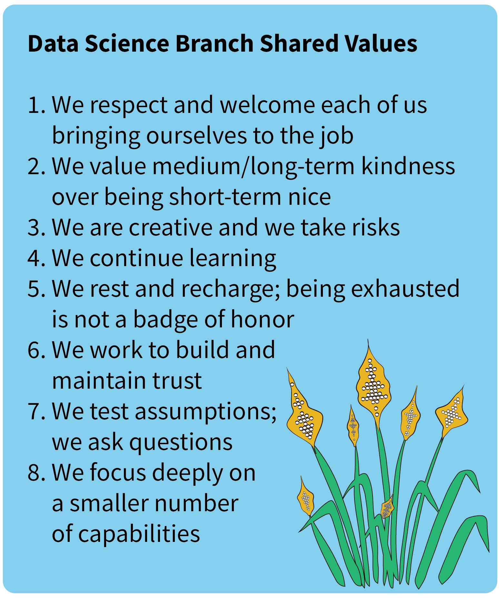
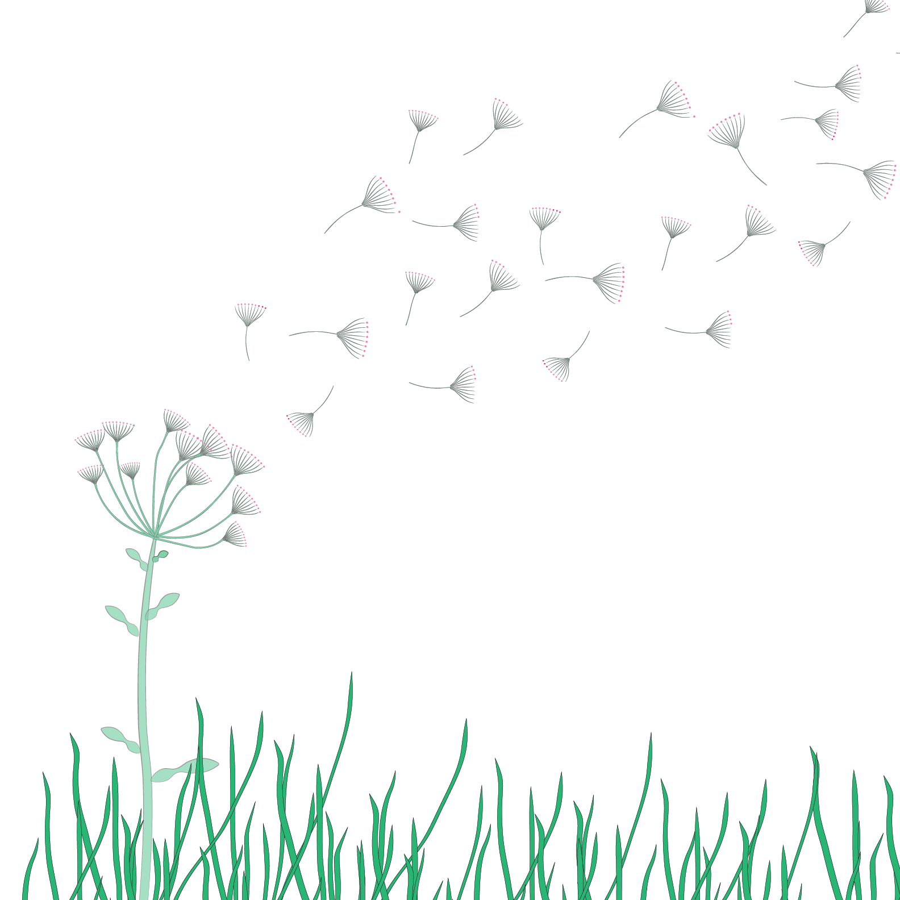
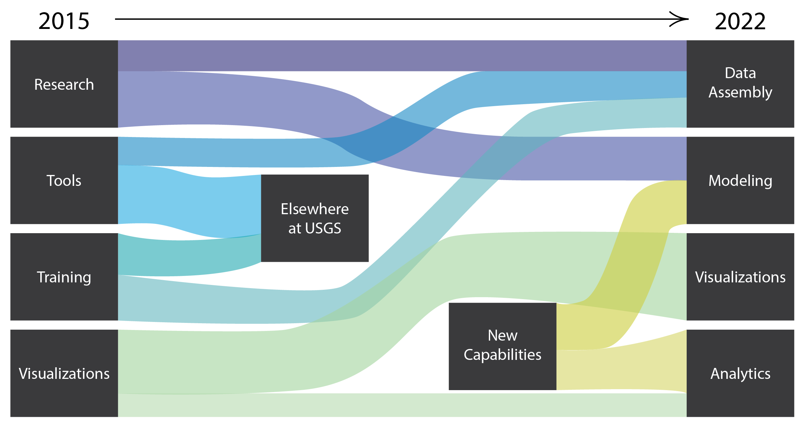

Federal data science management
Jordan S Read ![]()
I wrote this in December 2022, in my last weeks at the U.S. Geological Survey after ten years there, most of them spent building the water data science capability that became a branch in the Water Mission Area. It was written for whoever took the job next, and for anyone else trying to grow a technical team inside a large federal organization.
I’m now CEO of CUAHSI, a university consortium that supports water science with shared data infrastructure, training, and convening. Different setting, but I’m still focused on creating the conditions for other people to do great water science work together.
A few notes for 2026: The post describes the branch as existed in 2022, and a lot has changed at USGS since, so read it as a record rather than a current description. Some of the links point to pages that have moved or been retired, and I’ve noted those where they appear. The shared values in Box 1 were written by the whole group back in 2022 and are still useful to look back on.
Cross-posted at nasa-openscapes.github.io/news, nmfs-openscapes.github.io/blog and openscapes.org/blog.
Turning over a new leaf

Every oak tree started out as a couple of nuts who stood their ground. – Henry David Thoreau
Thanks to Althea for helping put together this post! Credit to her for coming up with framework for the post and providing editorial guidance, and for her and Cee for designing all of the images that appear here.

I can’t imagine a more satisfying end to my decade of federal service, most of which I spent growing data science capabilities. I’ve been a major part of bringing dozens of incredibly talented people into the federal workforce. I worked hard to established a water data science capability that is in high demand and has inspired the career choices of many. This progress was realized over many years. In 2012~2013, our first few data scientists joined what at the time was a software development and analytics team, and we won proposals and data-intensive project work to grow and hire staff that each brought new ideas and contributions to our collective vision for data science. We created a proposal to formalize our ad hoc group as a data science team in 2015 and our goals were to: 1) provide leadership for the emerging water data science community, 2) enhance the relevance and usability of water data and water analysis/modeling software, and 3) expand the community of practicing water data scientists. As I was organizing files to get ready for my departure, I ran across the proposal that contained these elements and it was neat to see our foresight at the time and our follow through in the years after. As of last year, we’d brought our water data science practice to a level that met these goals (read more about that here; see Figure 1).
I was the supervisory data science team lead that helped us take root in 2015 and then I became the data science branch chief in March of 2017 when the team was elevated into a formal branch in the USGS water mission area. The job of federal data science manager has been rewarding and exhausting. There were never enough hours in the day to keep up with the endless excitement as the data science discipline expanded and inadequate structures to handle our team’s growth. I had a strong allegiance to staff and our shared mission, while working hard to lead change in a place that is notoriously high inertia (the federal government). I was at my best when I focused on cultivating the ideal conditions for others to flourish. Looking back now, I am deeply proud of where we are and the role I played in our accomplishments.
I learned a lot in my management roles and hope that others will benefit from hearing about the journey. Data science management is common enough now that you can read about it in various places, but the federal data science perspective is harder to find and I hope to contribute by filling in some information gaps that may be of use to my replacement or others considering similar roles.

Bloom where you’re planted
I’d imagine some significant differences exist between growing data science at a start-up vs in the largest bureaucracy on earth, the US federal government. The federal identity shapes so much of what we have authority and responsibility to do that it might help to consider it as a climate zone – you wouldn’t expect drought-adapted plants to flourish in a rain forest and you shouldn’t be surprised when an otherwise amazing idea dies on the vine because it was outside of scope of your federal agency.

Constraints can be flipped into identity-defining values that staff embrace and embody. Align the work and the people with the climate zone you are operating in, add a few of the right seed projects, align appropriate staff, and soon you can cultivate something that can be sustained. The federal constraints can be messaged as restrictive or burdensome, or alternatively, can help form a niche that makes it easier for all of you to define what you do, why you do it, and where you’ll take it next. As illustrated above (Figure 2), a fence could isolate (negative) or provide a critical substrate for growth (positive).
Aside: The positive spin is also critical because negative messaging from leadership builds up over time and can lead to negative group-think that skewers each new interesting idea with all of the ways it could fail.
I’ve got a few of these positive constraint examples below based on my experience in the U.S. Geological Survey, but I’m sure there are many parallels elsewhere:
Public service motivates leadership in open science
In federal service, we aim to provide value to the nation. This is an exciting and motivating concept at the USGS because when we share data or code, in most cases we need to share it with all. In the data science branch, we’ve taken this on as a charge to provide more leadership in open science. USGS researchers already need to provide the data behind federally funded science, but many of our staff are motivated to take that much further, providing data, code, preprint publications, data visualizations, and how-to tutorials as part of releasing new content. Instead of protecting the intellectual property (IP) of our ideas or methods, our aim is to share IP publicly and support others to learn or build on it.
Employee retention leads us to remote-first work culture
Our original data science team was formed in Madison, WI and all employees worked together in the same building. In 2016-2017, three employees relocated, and I retained them by modifying their work agreements (in fed-speak, this was done by changing the employee’s “duty station”). After these moves, we had shifted into the dreaded hybrid remote/in-person work zone. In hindsight, I was embarrassingly behind at managing this transition effectively, relying on extra effort from the remote staff to stay connected and retaining most of our practices. At about the same time, the negative impact of my Madison-only hiring practices on reaching more diverse applicants became clear. The in-person model wasn’t cutting it and I shifted my thinking around to down-weight in-person work and socialization in favor of better recruiting potential. Cue COVID-19 and suddenly we were 100% remote (or in truth, many of us 100% teleworking from home) and my hiring approach became remote-first with a negotiable location anywhere within the US. Like many others, we had to embrace being fully remote. But we all wanted to make this experience great and worked together to make major positive changes. I’m really proud that we embraced this work posture early; we’ve now had a lot of time to refine and build new processes. Our constraints for how colleagues would work together evolved into a vibrant distributed workforce that maintains long distance friendships and carries out highly effective collaborations.
Hiring challenges become recruiting strengths
The intersection of many different policies and requirements contributes to the impression that federal hiring is very hard. Federal employees also have protections from being removed without clear and documented cause. Together, these two things mean federal employees may have higher inertia when compared with other employment pathways - harder to get in the door and harder to be shown the door back out. Since the success of our efforts depends on our ability to attract and hire people to do data science work, getting hiring right had to be a priority. We completely reimagined hiring and what we came up with blossomed into a bit of a model for other parts of the organization (see blog on data sci/ML hiring and viz hiring) (These blog posts are no longer available) efforts are covered in other blogs, I won’t say much more about it. But it is neat to reflect that we took something that many federal managers view as the low point of their work (navigating the hiring processes) and turned it into something we excel at, provide leadership for, and have wide ownership of across existing staff.
Aside: Federal jobs are great and the benefits are super competitive. But in fast growing data/tech positions, we’re often recruiting candidates that have the potential to earn more elsewhere. To stay competitive, I have found that sharing our branch’s values (see Box 1 below) and workplace culture loudly and proudly have helped our hiring process become more inclusive and more compelling.

Gardener’s wisdom
My approach to managing data scientists evolved a lot over the ten-year period (2012-2022) that included generating the vision, formalizing the team, and later formalizing the data science branch. I have boiled key parts of this approach down to a list that could be useful for others, perhaps as idea seeds for current or future data science managers in government (Figure 3). Each of these concepts proved fruitful for our data science group and I think they are generally useful for others entering into this line of work.

Build authentic relationships with the staff that you represent
- Justification: Developing empathy for staff you represent is a critical component to effective supervision. The benefits of putting in the work to build these connections are staggering and some are obvious, including staff feeling welcome to be themselves or having more honest conversations about skill-building needs.
- Considerations: Supervisors often focus on the business aspects of staff relationships and avoid making social connections during one-on-one meetings. But building relationships and working to create a real empathetic connection to each employee can lead to more inclusive and effective decisions because the impacts of the outcome on each employee is implicitly considered. Doing this work requires bandwidth and can be emotionally taxing, but avoidance may negatively affect performance, morale, and retention of the team.
- Example: I worked on building authentic relationships with staff more purposefully beginning in 2019 and I’m glad I had a head start prior to COVID-19 because of how critical it was to have empathy for each employee and what they were going through. By the time our 2021 cluster hire effort began, I had upskilled this managerial capability and approached hiring decisions by incorporating team complementarity, which means I took into account collaborative competencies and likelihood of effective team contributions as opposed to assessing candidate technical strengths in isolation. I’m deeply proud of those hiring selections and how effectively the staff work together and support each other today.
Support experimentation outside of the primary work
- Justification: Small investments can be used to test the viability of new areas of work, including assessing staff alignment/excitement and potential complement to other work. Some level of experimentation is necessary to avoid stagnation.
- Considerations: Managers will need to make clear business arguments for why funding for this type of experimental work is necessary. It is important to place practical constraints on experimentation and continue delivering value in the core competencies. Too much exploration will likely lead to a poor reputation from failing to deliver on time. Too little exploration (too much oversight on each employee’s time investments) could lead to less confidence in making smaller research leaps within the normal levels of uncertainty found in data science work.
- Example: Our highly successful Vizlab capability (This blogpost is no longer available) was created after we led a two-day hackathon for staff in 2014 and produced a drought visualization that was retweeted by John Podesta, who was a Senior Advisor to the White House at the time. This initial experimentation and success allowed us to expand formally into this area, including by leading a larger cross-agency data viz the following year.
Think subtraction first when managing workload volume and variety
- Justification: Simple workload management math means that absent a coincident increase in capacity (e.g., through hiring), new work requires decreased effort elsewhere.
- Considerations: Many things contribute to workload, such as timesheets, meeting attendance, travel forms, and other elements of the job. Improving the efficiency of processes for tasks outside of the core job can unlock capacity via subtraction and create space for higher quality work. It can be hard to say no to new interesting work or reducing expectations of senior leaders above the group for a reasonable volume and type of work. A data science manager who fails to take this seriously may inadvertently leave the team with little time left for experimentation.
- Example: Our division has created “do not schedule” calendar blocks for deep work focus time every Wednesday afternoon and Friday morning. Additionally, we devote a full week every two months to focus topics, usually deep work requiring high levels of concentration or close collaboration. We subtract the obligation for standing meetings during these times.
Keep pace with staff and shifts in work by constantly refreshing career paths
- Justification: Retaining high-performing employees can be challenging if there is not a pathway to leadership and/or promotion. Excellent staff can be underutilized if their capacity for work or roles with great responsibility or complexity is unmet.
- Considerations: Creating new pathways for promotion is challenging to do within the constraints of the federal government. It is advisable to begin efforts for position creation years before they are necessary. Aligning the appropriate salary (or “grade” in our USGS federal position) with the influence, complexity, responsibility, and uncertainty of current or future technical work needs to be addressed within the official process of position classification.
- Example: We were able to create “senior data scientist” positions that are higher graded and have a general position description, allowing their use for multiple employees doing different types of specialty work. We also created new team lead supervisors that are higher graded (read more about those positions here (This blogpost is no longer available). Each of these required a 2+ year effort to establish.
Craft an identity and scope that is narrow enough for excellence but wide enough to sustain work and funding
- Justification: For any tech-aligned group, defining and communicating strategically scoped capabilities is critical for: securing organizational support to operate, managing expectations of collaborators/clients, efficient communication, staff mission alignment, and staff morale.
- Considerations: Data science is too broad for comprehensive expertise, so managers need to focus the group on a subset of the discipline that matches the business/research needs of the organization and is tractable with the current group’s size. The data science manager needs to hold the line to keep work outside of this scope from landing with the team while also normalizing the revaluation of what’s in/out at an appropriate cadence.
- Example: The landscape of machine learning was too wide for us to establish real expertise without a focus area. Our team built new collaborations to integrate existing water knowledge into machine learning approaches beginning in 2017. Knowledge-Guided Machine Learning became an area that our branch excelled at and this success attracted numerous people into environmental data science careers.
Changes in identity should be approached with extreme care
- Justification: Rapid changes to the offerings of your group can trigger staff loss (when scope shrinks) or reputation hits when you fail to deliver value with new capabilities (when scope increases).
- Considerations: If operating in a complex government org you may alienate potential customers/collaborators by changing too quickly – by the time other parts of the organization really get a handle on what your offerings are, those things have changed. A group that changes too slowly is irrelevant.
- Example: In 2017 we de-scoped our general capability in R package development but were able to line up Laura (our main R package developer) with another place in the organization where the work could continue to flourish. In 2019, we took something we’d been doing for years – building reproducible data pipelines – and named it as a specialization within the group (e.g., Data Assembly in Figure 4), allowing staff to align and take pride in an important component of data science work (see Figure 4 for the other moderate changes we embraced between 2015 and 2022).

Distribute ownership of culture and vision to the team
- Justification: Upholding and practicing cultural values is more sustainable when its upkeep and refinement is distributed among those most impacted. The same applies to the scope and vision of the team.
- Considerations: Change in culture or capabilities in the federal government can be short lived if a single person is responsible for moving things forward. Creating lasting change requires redundancy in leadership and collective efforts by many that are motivated by shared goals. Also, because change in the federal government is often slow, managers pushing for change can experience significant self doubt over the years as progress can fail to materialize in the short-term. I’d recommend you go there as a team.
- Example: New hiring efforts have distributed leadership within our data science branch and the larger division we operate in. Several staff have led these efforts (Cee and Julie P for example) (This webpage is no longer available). and we co-developed the original approaches with other data-intensive managers (Emily and Julie K) and data science staff. As a result, these practices are now considered a new norm for general UGSS Water Mission Area hiring, giving an effort with widely shared ownership an influence and impact well beyond our immediate teams.
Take responsibility for project changes publicly and/or in writing
- Justification: The vast majority of data science work is complex with many unknowns, resulting in error-prone estimates of timelines for key project milestones. Staff can internalize the stress from an implied pressure to deliver on “all the things” regardless of whether timelines are realistic.
- Considerations: Management failures happen when the project work changes (usually by expanding) but the change isn’t acknowledged. Repeating this pattern will lead to burn-out or resentment as a result of unrealistic workloads. Consider writing to the team, a la “We discovered our planned approach isn’t going to scale with the needs of this project, so we’re going to dial back on the other deliverables to make room for solving this problem” and be explicit by saying exactly which deliverables are getting tabled and what the budget and timeline changes will be.
- Example: Alison and Lindsay were quick studies on D3.js when we were working on a county-specific visualization of water use in the US. They proposed a much more intuitive zoom functionality that drastically improved the usability of the viz. We needed to make space for the implementation and shifted our project deadline accordingly.
Farewell
It has been extremely satisfying to see the joy and pride our group has had in our work. Thank you to everyone who took a leap and joined our group over the years and to the countless others that we’ve learned from. Remember to have fun along the way.
Note
Any use of trade, firm, or product names is for descriptive purposes only and does not imply endorsement by the U.S. Government.
Citation
@online{s_read2026,
author = {S Read, Jordan},
title = {Federal Data Science Management},
date = {2026-09-28},
url = {https://openscapes.org/blog/2026-09-16-federal_data_science_management},
langid = {en}
}